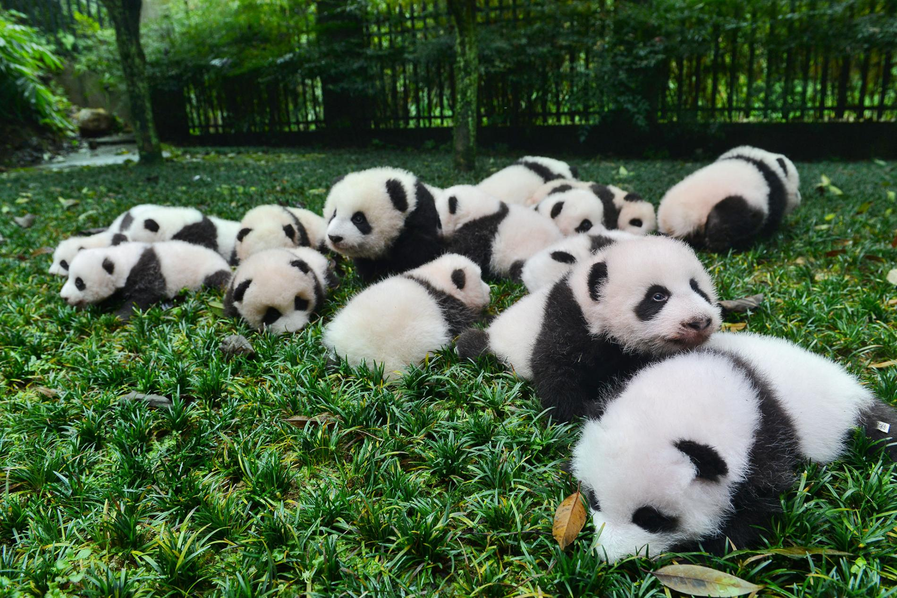

大熊猫!

大熊猫（學名：Ailuropoda melanoleuca），也稱作大猫熊，一般稱為「熊猫」或「猫熊」，屬於食肉目熊科的一種哺乳動物，體色為黑白兩色。熊猫是中國特有物種，現存的主要棲息地是中國中西部四川盆地周邊的山區和陕西南部的秦岭地区。
全世界野生大熊猫現存大約有2060頭（2016年数据[2]）。2016年末，世界自然保护联盟（IUCN）将大熊猫的受威胁等级从“濒危级”降为“易危级”。[3]由於生育率低，在中國瀕危動物紅皮書等級中評為瀕危物種，為中國國寶。

大熊猫被譽為生物界的活化石[4]。 大熊猫黑白相間的毛色和憨态可掬的外表使其深受人們喜愛，在全世界亦有大量粉丝。在1961年世界自然基金會成立時就以大熊猫為標誌，大熊猫俨然已成為了濒危物種保护最重要的象徵；大熊猫也是中國在外交活動中向对方表示友好的重要代表，美國國際政治學元老級人物約瑟夫·奈爾更直言大熊貓被視為中國拓展軟實力的重要支柱，與英國的皇室家族有著異曲同工之妙[5]。
